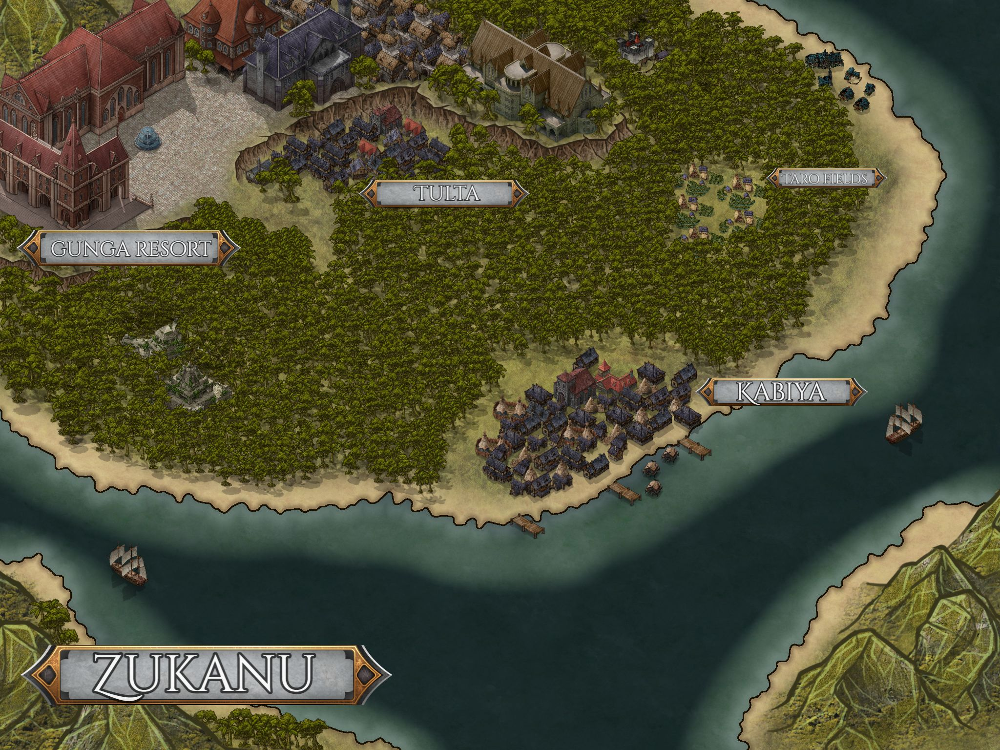

In the shadow of the Calamity war new markets opened up in the newly formed senate controlled lands, and where there are new markets there are new entrepreneurs waiting to satiate its customers. The Andromeda, a treasure ship looking for untouched ad ancient locations from before the calamity war. Their goal: to find ancient treasures and artifacts to collectors or corperations. Their Captain, Obai Malk sails so he can find a new life after the war. His crew is much the same; the young and scrappy Ryūko Kaze, a high-elf born into a martial society, however her days of blindly following orders may soon pass. The Half-Elf Misaki Althwyn, a gentle and kind soul who grew up in poverty with his mother Raquel, however maybe this young man has a twist coming into his life. The Noble mercenary knight Lionen Sre'Ggop "the White Reaper", and his tabaxi squire Buddy "The Cath-Lick crusader", a dynamic duo of divine justice, set on spreading the way of "King Shit".Finally the enigmatic "Xero" or as she was known as in her past life, Revalia Crux; a Vedalkin woman found in the first ship they tried to salvage, emerging from the stasis pod she remembers not her name or her origins however as time passes she has beguns to remember more about herself and her past.

Argust 2, an agri-world
The local farming planet of Argust 2, this planet was the first the crew stopped on in their journy for salvage given to them by their employer Cyrus Cortez. On their time here they crippled the corrupt and sinister church of the Vell by taking down their walking weapons platform/city "the Colossus" and made allies of the locals, a key figure is the new halfling planetary governor Archabald Theadore Aramaris Hej'Hej, once a farm owner set on feeding everyone he has been elected to the seat of planetary govenor. The second being a Kaleshtar Doctor, Dascar Lee, who has been brought into Hej'hej's cabinate as the new health director.

A walking city, A Church Colossus

The Ruined Battle Stationof Crux Station

Battle Map of Crux Station
The Tropical Vacation Planet of Zukanu

The Battle Against Dell Belphine, the Fairy Queen
okay so a change from the usual here, I just really wanted to make a joke with this encounter and made Bell Delphine a fae entity that hypnotized people using spring water...okay I was really drunk when writting it and well the players loved it. Who am I to stop a good laugh, I'm a story teller and if its fun for them then its fun for me.